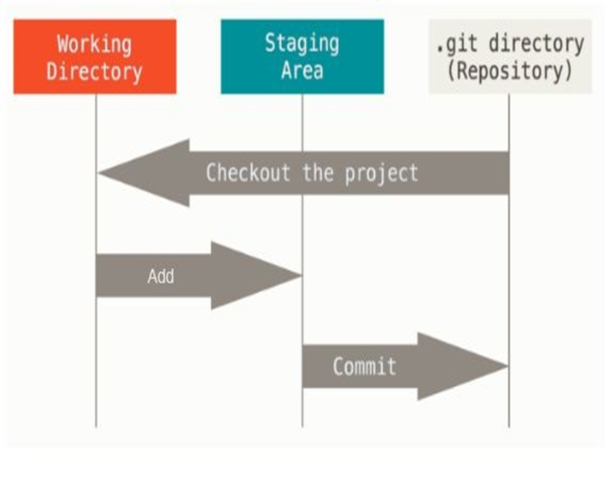

En esta unidad vemos cómo son los pasos para trabajar con sistemas de control de versiones, permitiendo conocer el estado de un proyecto, los cambios que se realizan, y las personas que intervienen.
Github es un sitio web y servicio gratuito de alojamiento de repositorios Git. Cualquier persona o empresa puede abrir una cuenta y alojar la cantidad de repositorios que desee. Es importante tener en cuenta que, por defecto, los repositorios alojados en Github son públicos. Esto quiere decir que cualquier usuario (o no) podrá acceder al código allí alojado, aunque no podrá realizar modificaciones sin que algún administrador o dueño del repositorio en cuestión le brinde acceso de escritura. Además de brindarnos alojamiento gratuito para nuestros repositorios, Github nos ofrece varias herramientas adicionales orientadas principalmente a la colaboración.
Modificado significa que modificamos el archivo pero todavía no lo hemos confirmado a nuestro repositorio.
Preparado significa que marcamos un archivo modificado en su versión actual para que vaya en tu próxima confirmación.
Confirmado significa que los datos están almacenados de manera segura en nuestro repositorio local.
